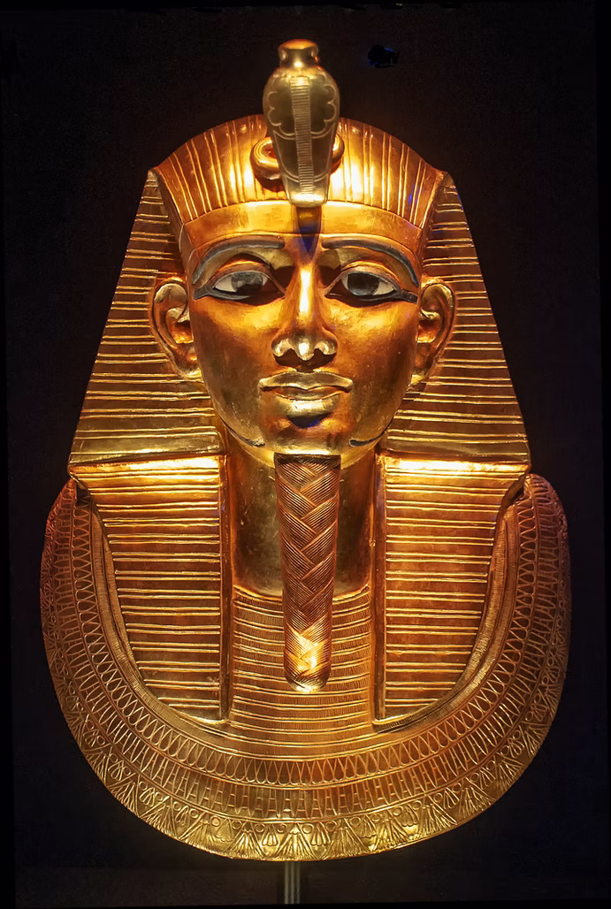

From wikipedia, the free encyclopedia
Tutankhamun, Tutankhamun[1]
Tutankhamun's golden mask
Pharaoh
| Reign | c. 1332 – 1323 BC, New Kingdom (18th Dynasty) |
| Predecessor | Neferneferuaten |
| Successor | Ay (granduncle/grandfather-in-law) |
Tutankhamun[a] commonly referred to as King Tut, was an ancient Egyptian pharaoh who was the last of his royal family to rule during the end of the 18th Dynasty (ruled c. 1332 – 1323 BC in the conventional chronology) during the New Kingdom of Egyptian history. His father is believed to be the pharaoh Akhenaten, identified as the mummy found in the tomb KV55. His mother is his father's sister, identified through DNA testing as an unknown mummy referred to as "The Younger Lady" who was found in KV35.[9]
Tutankhamun took the throne at eight or nine years of age under the unprecedented viziership of his eventual successor, Ay, to whom he may have been related. He married his paternal half-sister Ankhesenamun. During their marriage they lost two daughters, one at 5–6 months of pregnancy and the other shortly after birth at full-term.[10] His names—Tutankhaten and Tutankhamun—are thought to mean "Living image of Aten" and "Living image of Amun", with Aten replaced by Amun after Akhenaten's death. A small number of Egyptologists, including Battiscombe Gunn, believe the translation may be incorrect and closer to "The-life-of-Aten-is-pleasing" or, as Professor Gerhard Fecht believes, reads as "One-perfect-of-life-is-Aten".
Tutankhamun restored the Ancient Egyptian religion after its dissolution by his father, enriched and endowed the priestly orders of two important cults and began restoring old monuments damaged during the previous Amarna period. He reburied his father's remains in the Valley of the Kings and relocated the capital from Akhetaten back to Thebes. Tutankhamun was physically disabled with a deformity of his left foot along with bone necrosis that required the use of a cane, several of which were found in his tomb. He had other health issues including scoliosis and had contracted several strains of malaria.
The 1922 discovery by Howard Carter of Tutankhamun's nearly intact tomb, in excavations funded by Lord Carnarvon[11], received worldwide press coverage. With over 5,000 artifacts, it sparked a renewed public interest in ancient Egypt, for which Tutankhamun's mask, now in the Egyptian Museum, remains a popular symbol. The deaths of a few involved in the discovery of Tutankhamun's mummy have been popularly attributed to the curse of the pharaohs. He has, since the discovery of his intact tomb, been referred to colloquially as "King Tut".
Some of his treasure has traveled worldwide with unprecedented response. The Egyptian Supreme Council of Antiquities allowed tours beginning in 1962 with the exhibit at the Louvre in Paris, followed by the Kyoto Municipal Museum of Art in Tokyo, Japan. The exhibits drew in millions of visitors. The 1972–1979 exhibit was shown in United States, Soviet Union, Japan, France, Canada, and West Germany. There were no international exhibitions again until 2005–2011. This exhibit featured Tutankhamun's predecessors from the 18th Dynasty, including Hatshepsut and Akhenaten, but did not include the golden death mask. The treasures 2019–2022 tour began in Los Angeles and will end in 2022 at the new Grand Egyptian Museum in Cairo, which, for the first time, will be displaying the full Tutankhamun collection, gathered from all of Egypt's museums and storerooms.
An inscription from Hermopolis refers to "Tutankhuaten" as a "king's son", and he is generally thought to have been the son of Akhenaten,[16] although some suggest instead that Smenkhkare was his father.[17] Inscriptions from Tutankhamun's reign treat him as a son of Akhenaten's father, Amenhotep III, but that is only possible if Akhenaten's 17-year reign included a long co-regency with his father,[18] a possibility that many Egyptologists once supported but is now being abandoned.[19]
In 2008, genetic analysis was carried out on the mummified remains of Tutankhamun and others thought or known to be New Kingdom royalty by a team from University of Cairo. The results indicated that his father was the mummy from tomb KV55, identified as Akhenaten, and that his mother was the mummy from tomb KV35, known as the "Younger Lady", who was found to be a full sister of her husband.[27] This means that the KV35 Younger Lady cannot be identified as Nefertiti as she was not known to be a sister of Akhenaten.[28] The team reported it was over 99.99 percent certain that Amenhotep III was the father of the individual in KV55, who was in turn the father of Tutankhamun.[29] The validity and reliability of the genetic data from mummified remains has been questioned due to possible degradation due to decay.[30] Researchers such as Marc Gabolde and Aidan Dodson claim that Nefertiti was indeed Tutankhamun's mother. In this interpretation of the DNA results, the genetic closeness is not due to a brother-sister pairing but the result of three generations of first-cousin marriage, making Nefertiti a first cousin of Akhenaten.[30]
Tutankhamun's red door
Tutankhamun, whose original name was Tutankhaten or Tutankhuaten, was born during the reign of Akhenaten, during the late Eighteenth Dynasty of Egypt.[12] Akhenaten's reign was characterized by a dramatic shift in ancient Egyptian religion, known as Atenism, and the relocation of the capital to the site of Amarna, which gave its name to the modern term for this era, the Amarna Period.[13] Toward the end of the Amarna Period, two other pharaohs appear in the record who were apparently Akhenaten's co-regents: Neferneferuaten, a female ruler who may have been Akhenaten's wife Nefertiti or his daughter Meritaten; and Smenkhkare, whom some Egyptologists believe was the same person as Neferneferuaten but most regard as a distinct figure.[14] It is uncertain whether Smenkhkare's reign outlasted Akhenaten's, whereas Neferneferuaten is now thought to have become co-regent shortly before Akhenaten's death and to have reigned for some time after it.[15]
An inscription from Hermopolis refers to "Tutankhuaten" as a "king's son", and he is generally thought to have been the son of Akhenaten,[16] although some suggest instead that Smenkhkare was his father.[17] Inscriptions from Tutankhamun's reign treat him as a son of Akhenaten's father, Amenhotep III, but that is only possible if Akhenaten's 17-year reign included a long co-regency with his father,[18] a possibility that many Egyptologists once supported but is now being abandoned.[19]
In 2008, genetic analysis was carried out on the mummified remains of Tutankhamun and others thought or known to be New Kingdom royalty by a team from University of Cairo. The results indicated that his father was the mummy from tomb KV55, identified as Akhenaten, and that his mother was the mummy from tomb KV35, known as the "Younger Lady", who was found to be a full sister of her husband.[27] This means that the KV35 Younger Lady cannot be identified as Nefertiti as she was not known to be a sister of Akhenaten.[28] The team reported it was over 99.99 percent certain that Amenhotep III was the father of the individual in KV55, who was in turn the father of Tutankhamun.[29] The validity and reliability of the genetic data from mummified remains has been questioned due to possible degradation due to decay.[30] Researchers such as Marc Gabolde and Aidan Dodson claim that Nefertiti was indeed Tutankhamun's mother. In this interpretation of the DNA results, the genetic closeness is not due to a brother-sister pairing but the result of three generations of first-cousin marriage, making Nefertiti a first cousin of Akhenaten.[30]